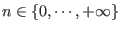

:set magic |
Autorise les expressions de recherche en utilisant les expressions
régulières (cf. chapitre ![[*]](crossref.png) ). Cette option est positionnée
par défaut (cf. section ). ). Cette option est positionnée
par défaut (cf. section ). |
|
:set nomagic |
N'autorise que les symboles "^" et "$" pour
les expressions de recherche. Pour plus de précisions sur les
options de "vi", reportez-vous à la section . |
|
^ |
Correspond au début de ligne (idem que les expressions régulières,
cf. ). |
|
$ |
Correspond à la fin de ligne (idem que les expressions régulières,
cf. ). |
|
. |
Correspond à n'importe quel caractère (idem que les expressions régulières,
cf. ). |
|
\< |
Correspond à un début de mot. | |
\> |
Correspond à une fin de mot. | |
[str] |
Correspond à un et un seul caractère parmi ceux composant
"str" (idem que les expressions régulières,
cf. ). |
|
[^str] |
Correspond à un et un seul caractère différent de ceux
composant "str" (idem que les expressions régulières,
cf. ). |
|
[a-w] |
Correspond à un et un seul caractère entre les caractères
"a" et "w" (idem que les expressions régulières,
cf. ). |
|
* |
Spécifie le nombre d'occurence qu'un caractère peut apparaître. Dans ce cas, le caractère spécifié peut apparaître un nombre quelconque de fois ( ). | |
\ |
Annule l'interprétation du caractère suivant. | |
\\ |
Permet de spécifier le caractère "\". En effet,
"\\" implique que :
|
|
Remarque 19..4 :
Ce tableau montre que les règles de syntaxes des expressions régulières sont largement utilisées dans "vi". Tout comme les commandes "sed" et "awk" (cf. chapitres